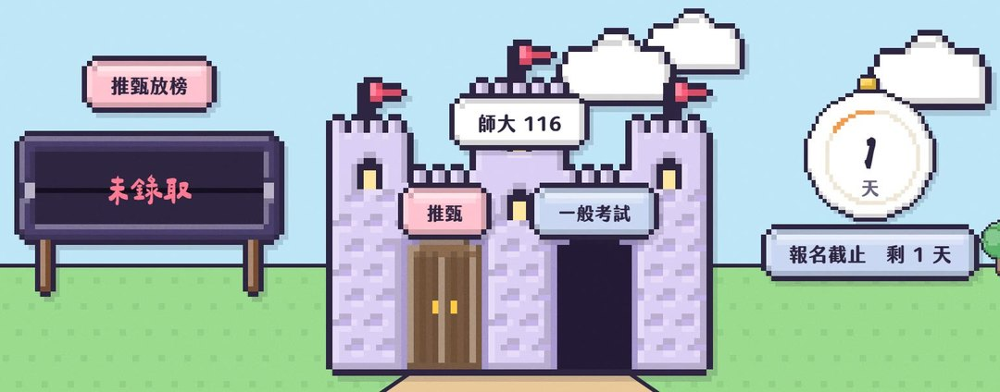

我要成為心理師 EP2 懶人包116 諮商所
報名月曆
一般考試 11/20 下午 5 點就截止
- 11–12 月月曆
- 推甄面試放榜
- 考試時程
- 兩扇門比較
- 報名費
- 檢查表
- 常見問題
11–12 月月曆
就截止
等高師、政大、東華的推甄結果，就來不及報師大。考試先報，不要等。
清大＝心諮系甲組。其他學校的一般考試還沒公告，見第 5 張。
接下來誰面試、誰放榜
一榜＝書審通過、公布面試名單。面試日以各系所公告為準。
一般考試：已公告的三間
| 116 學年度 | 師大 | 政大 | 高師 |
|---|---|---|---|
| 推甄放榜 | 11/19 | 12/1 | 11/24 |
| 考試報名 | 11/10– 11/20 17:00 | 11/24– 12/8 | 12/7– 12/30 |
| 時間差 | 放榜隔天 就截止 | 放榜後 還有 7 天 | 放榜 13 天後 才開放報名 |
| 筆試 | 1/26 | 2/1–2/2 | 2/15 |
| 口試 | 3/6 | 3/12 | 3/19 |
| 放榜 | 3/18 | 3/24 | 4/9 預定 |
| 名額 推甄／考試 | 12／8 | 5／8 | 14／12 |
推甄放榜、報名在 115 年，筆試以後是 116 年。政大 12/8 中午 12 點前要取號、下午 3 點前登錄。師大＝教心系諮商心理學組，政大＝輔導與諮商學程，高師＝諮復所諮商心理組。
還沒公告的，先看上一屆
| 學校 | 報名 | 筆試 | 口試 | 放榜 |
|---|---|---|---|---|
| 國北教 | 11/20–12/10 | 2/1 | 3/7 | 3/18 |
| 清大 | 12/2–12/9 | 2/4 | 3/13 | 3/27 |
| 北市大 | 12/2–12/23 | 3/7 | 3/21 | 3/30 |
| 彰師 | 12/12–12/30 | 3/7 | 3/27 | 4/13 |
| 中教大 | 12/23–1/14 | 3/7–3/8 | 4/11 | 4/24 |
| 東華 | 12/31–1/21 | 3/8 | 3/21 | 3/30 |
以上是 115 學年度（上一屆）的日期，116 的簡章到 11/3 還沒公告，日期以各校簡章為準。臺南、嘉義、暨南、屏東沒查到 115 簡章原文，先不列。
上一屆有 4 間的筆試擠在同一個週末（北市大、彰師、中教大 3/7，東華 3/8）。筆試撞期只能選一間。
推甄 vs 一般考試
書審（自傳、讀書或研究計畫、在校成績；有的要推薦信）＋面試
筆試（諮商一定考，測驗與統計大多考，其他看學校）＋口試
大多是書審 30–50%、面試 50–70%；高師口試 70%，沒到 70 分不錄取
筆試過了才口試（師大只讓名額 2 倍進、政大約 4.5 倍）；口試佔 40–60%
政大、彰師、高師、臺南限相關科系（政大研究所畢業不限，高師非本科要證照＋2 年專職經驗）；師大、國北教、東華不限
大多不限：政大、高師（116）、彰師（115）不限；臺南考試簡章未查到
兩扇門最後都走進口試：有些學校（像師大、北市大）會請你當場演練一段諮商。
報名費總表（諮商組）
推甄116 官方 ＋後面是過了初審才繳的
- 師大1,500
- 政大1,500
- 國北教1,800
- 臺南1,300
- 彰師1,300（校友 1,000）
- 高師1,000＋500
- 東華1,200＋500
- 北市大1,200＋1,600
一般考試116 官方 ＋後面是進了口試才繳的
- 師大1,300＋1,200
- 政大1,300＋1,000
- 高師800＋500
115 參考（116 待公告）
- 國北教1,500＋1,000
- 清大1,500（不另收）
- 彰師1,300＋1,200
- 中教大1,200＋800
- 東華1,200＋500
單位：元，交通、住宿另計；考試總額有 5 間用 115 的價錢。低收、中低收入戶可減免，各校不同。
兩扇門一起走：檢查表
- 考試先報，不要等推甄結果。師大考試 11/20 下午 5 點截止，等高師、政大、東華放榜就來不及。
- 兩邊都可以報。查到的 7 間都沒禁止；清大、彰師（115 簡章）還寫明推甄已報到也能報。兩邊都上，擇一報到。
- 政大要交放棄聲明書：兩邊都正取（或備取已遞補），要交「甄試放棄入學資格聲明書」，不交就當你放棄考試。
- 推甄空出來的位子會併入考試：沒招滿或錄取後放棄的名額，9 校推甄簡章都寫會併入（或流用到）考試，所以考試名額可能比簡章多。
- 推甄備取要先上網登記，沒登記就沒資格： 北市大 11/20 16:00國北教 11/23 17:30師大 11/27 16:00政大 12/11 17:00彰師 12/16 17:00 師大不另外通知，每週五自己上網看遞補。
- 備取遞補到幾月：推甄最晚到 2 月開學（高師 12/31、政大 1/31、師大 2/12、國北教 2/15、彰師與東華 2/22）；考試備取可以等到 9 月開學前（政大 8/31）。
推甄沒上怎麼辦？
- 1備取有機會嗎？要等多久？
- 推甄備取最晚補到 2 月，考試備取可以等到 9 月開學前。師大不另外通知，每週五要自己上網看。教育部要點第七點、師大推甄
- 2在校成績要多高？
- 推甄只有政大、彰師要班排前 50%，其他學校不設門檻，但會算進書審；一般考試大多不看。各校推甄、政大考試
- 3錄取了可以放棄嗎？
- 可以，填放棄聲明書，簡章都沒寫罰則，但不能反悔。早點放棄，後面的備取才上得去。師大、東華推甄
- 4推甄上了，考試報名費退得回來嗎？
- 大多不能。例外：彰師推甄生報彰師考試免報名費；北市大截止前書面取消可退（扣 200 元）。三校考試、彰師推甄、北市大 115
- 5兩間學校考同一天怎麼辦？
- 筆試撞期只能選一間；口試只有少數學校（像高師）願意當天換時段。報名前自己先排開。師大考試、北市大 115 考試、高師推甄
還有這幾題
- 6應屆生的畢業證書什麼時候交？
- 各校不同，例：師大推甄、考試都是 116 年 8 月 13 日前，高師推甄 7 月 31 日前。交不出來，錄取資格會被取消。師大推甄與考試、高師推甄
- 7沒有大學學歷，能報嗎？
- 可以用「同等學力」報，例：專科畢業、離校 2 到 3 年以上（看學制）。但政大推甄不收、清大推甄限大學畢業，高師要 2 年以上相關工作經驗。教育部同等學力認定標準第五條；政大、清大、高師簡章
- 8男生等備取，會被叫去當兵嗎？
- 有的簡章寫可以憑准考證或錄取通知單辦延期徵集（彰師、清大、東華），實際以戶籍地公所兵役課為準。彰師、東華推甄；清大 115 考試
- 9要報幾間？總共要花多少？
- 間數沒有上限，也可以同時報別校；同一間學校上了好幾個，只能擇一報到。費用看第 7 張：8 間推甄約 13,400 元、8 間考試約 16,300 元。師大推甄、高師考試
完整影片在 YouTube
我要成為心理師 EP2 推甄跟考試：諮商所哪扇門好進？還可以兩扇一起走？
▶ youtu.be/iPzjWp8vaUI
- 上一集 EP1 怎麼當心理師？370 人搶 8 個位子youtu.be/NSUUJPSnfE0
- 懶人包「心理師之路」 研究所、實習、國考三關leopork.github.io/free-counseling/psychologist-path/
- 下一集 EP3 諮商所怎麼準備？書審、申論、讀書計畫三份模板youtu.be/6SetqgthUCw
- 播放清單「我要成為心理師」youtube.com/playlist?list=PLCye8Bqwstm4
你今年走哪一扇門？推甄、考試，還是兩扇都走？留言告訴怦怦。下一集：不是心理系怎麼準備？追蹤 @heart__atrium
現在很難熬嗎？安心專線 1925（24 小時免付費）。招生日期、名額、報名費以各校當年簡章為準。
IG、Threads @heart__atrium11 / 11